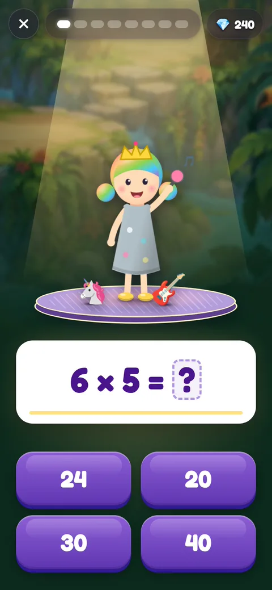
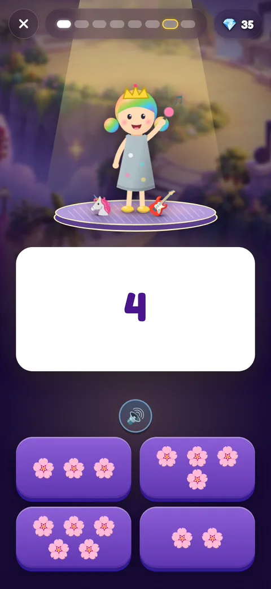
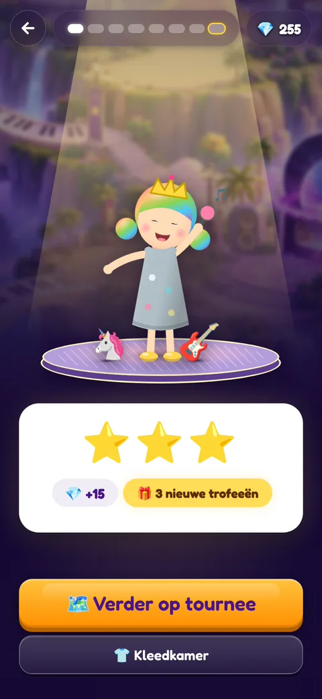
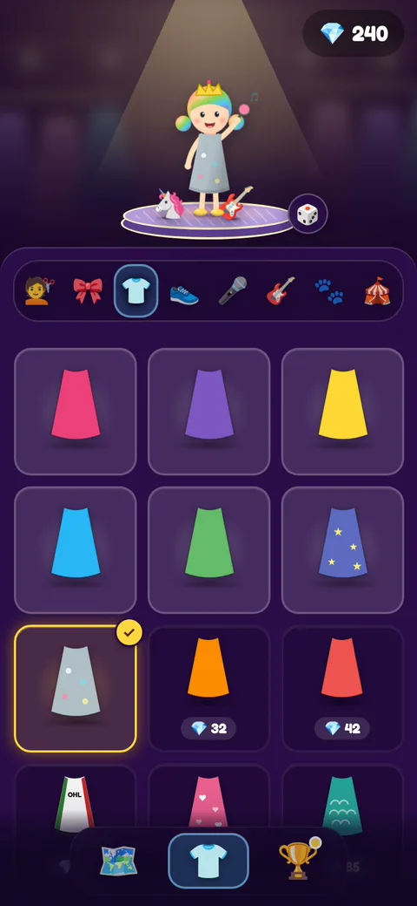
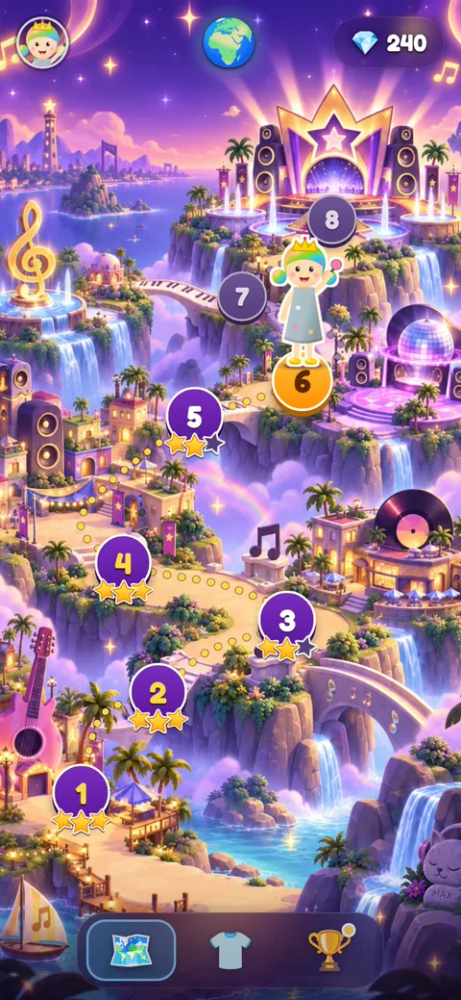
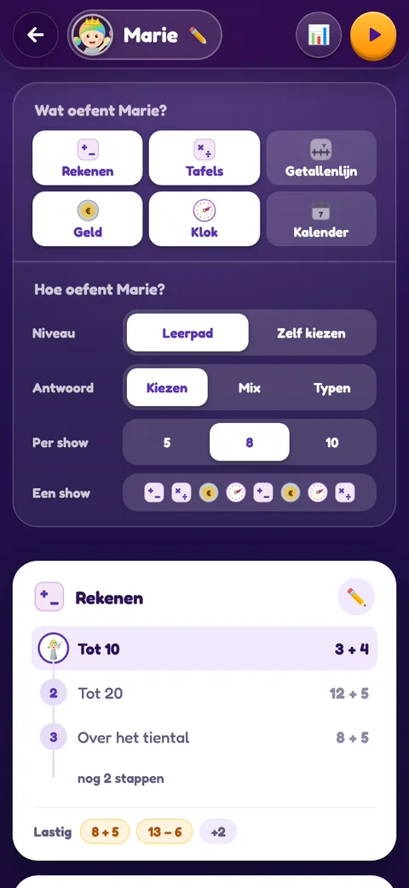
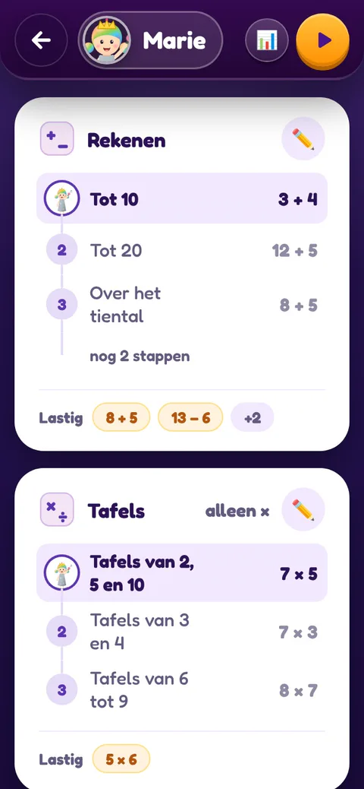

Rekenen en tellen als een show, voor kinderen van 5 tot 8.
▶ Speel meteen- Rekenen is een show

- Eerst tellen

- Elke keer sterren

- Sparen voor kleren

- Op tournee

- Jij kiest wat

- Het groeit mee

- Het filmpje
Wat je kind oefent
- Rekenen
- Tafels
- Getallenlijn
- Geld
- Klok
- Kalender
Goed om te weten
- Leest
voor - Zonder
internet - Geen
reclame - Ook als
app